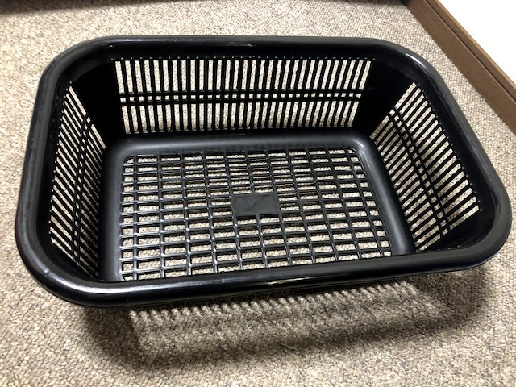
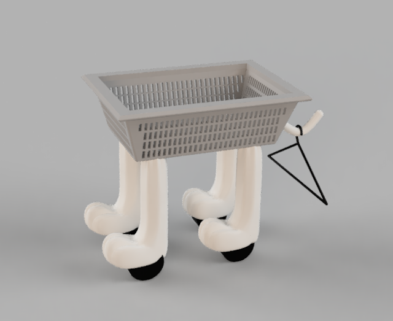

＜ルーティーンと趣味の境界を楽しくするもの＞
外出自粛を強いられる生活が続くにあたり、家事を手伝うというシチュエーションが増えてきたが、如何せん面白くない。特に洗濯物を干すという作業が面白くない。
なぜあの作業に時給が発生しないのか理解ができない。
なのでなぜ洗濯物を干す作業がつまらないのか理由を考察し、少しでも楽しい作業にするよう努めることにした。
＜干す作業が面白くない理由＞
・洗濯物を干すたびに、屈んでカゴから衣服を撮るのが面倒
・洗濯機からベランダまで持っていくのが面倒
・カゴの見た目がつまらなすぎる

コイツを見るたび洗濯物を干すのが嫌になる。
＜改善案/商品提案＞
商品名：BASCAT（BASKET+CAT）
ターゲット：屈むのがつらい人、洗濯物干しを憎む全人類

カゴに猫の足をつけることで可愛さを演出すると同時に、楽な体制で洗濯物が干せるようにした。また、ローラーをつけることでベランダまで運びやすくした。
＜改善点＞
かさばる→足を折りたたみ式にする/伸縮するようにする